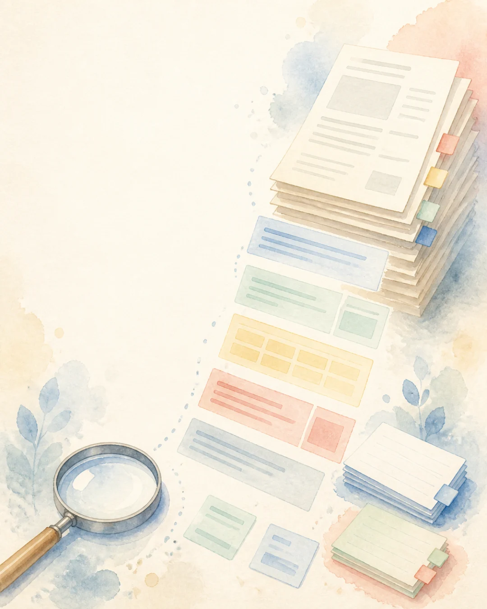
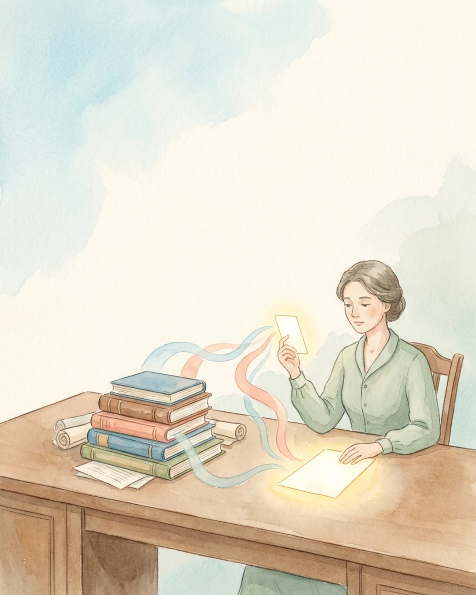
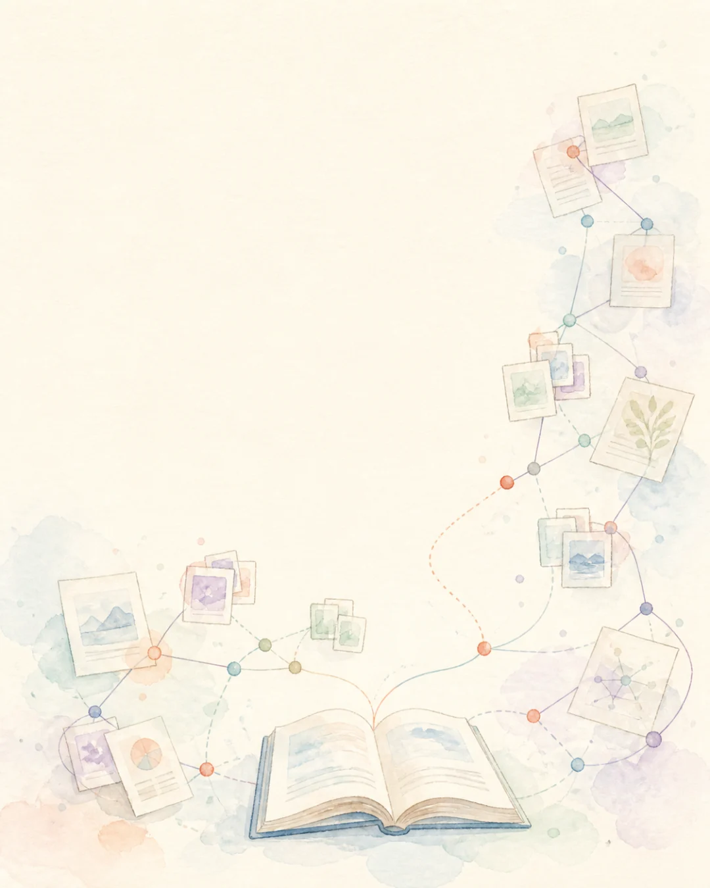
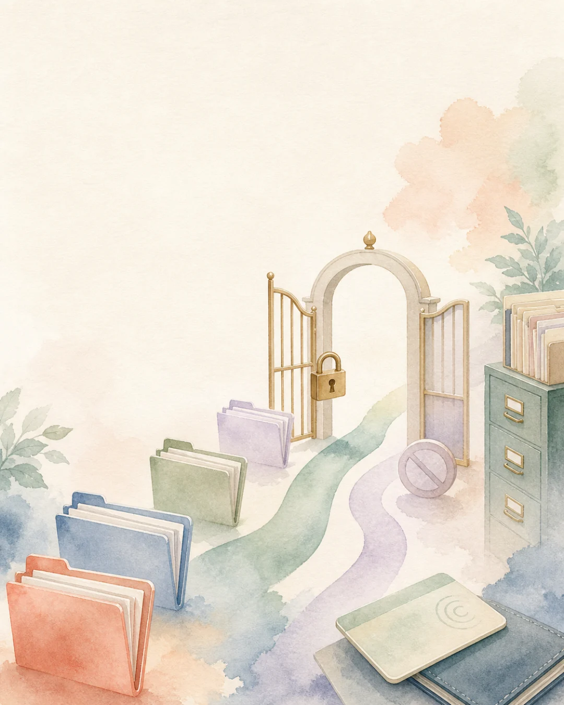
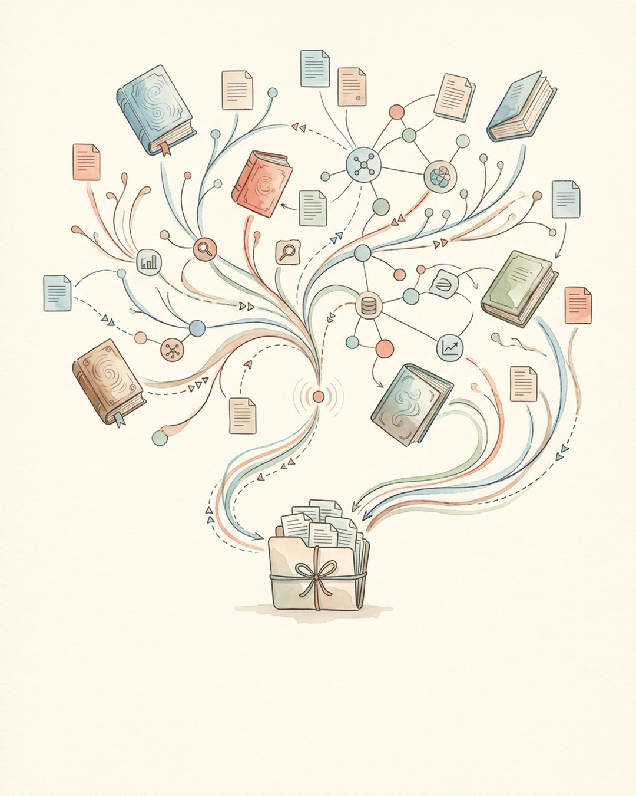
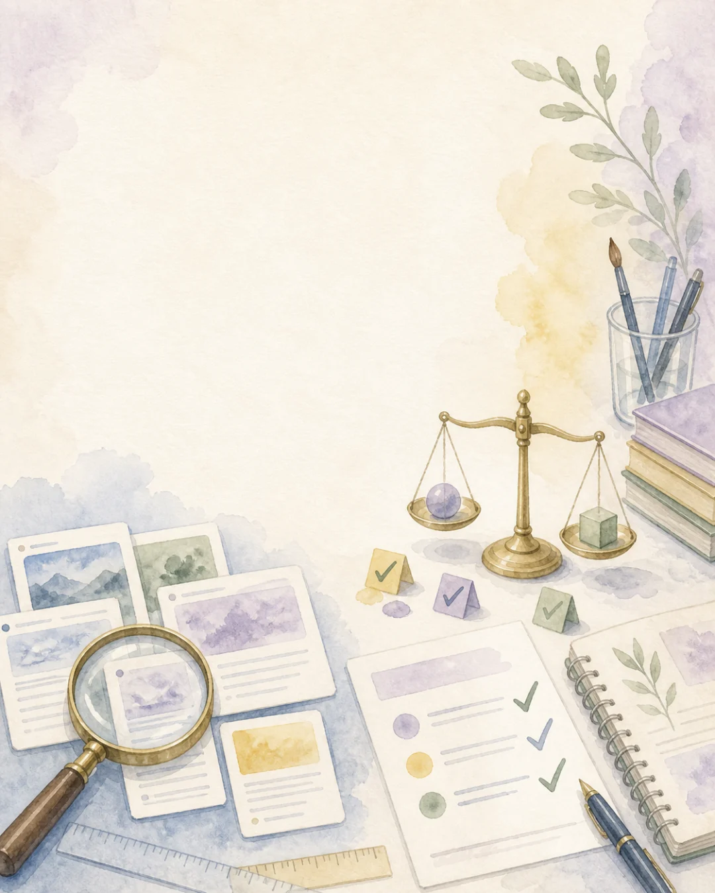
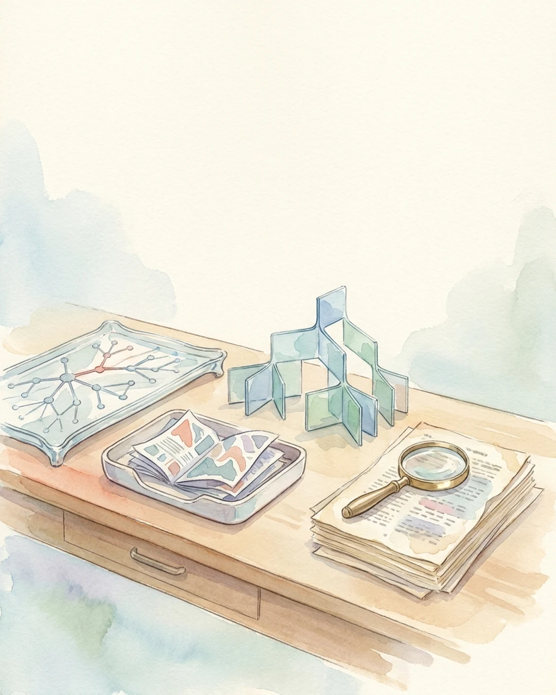

RETRIEVAL-AUGMENTED GENERATION
질문에 맞는 자료를 찾아 답변에 넣는 방법입니다
- 사용자 질문
- 관련 자료 검색
- 근거 선택
- 답변과 출처
RAG는 LLM과 별도의 검색 시스템을 연결해 외부 지식을 답변에 사용합니다.
모델을 다시 학습하지 않아도 최신 정보와 사내 자료를 반영할 수 있습니다.
2026년 8월 17일 기준 | 검색, 근거, 답변
좌우로 밀거나 방향키, Space, Home, End 키로 이동할 수 있습니다.
RETRIEVAL-AUGMENTED GENERATION
RAG는 LLM과 별도의 검색 시스템을 연결해 외부 지식을 답변에 사용합니다.
모델을 다시 학습하지 않아도 최신 정보와 사내 자료를 반영할 수 있습니다.
2026년 8월 17일 기준 | 검색, 근거, 답변

THE BASIC PIPELINE
문서는 먼저 읽을 수 있는 형태로 바꾸고 작은 단위로 나눠 색인합니다.
질문이 오면 관련 자료를 찾고 순서를 다시 매긴 뒤 LLM에 함께 보냅니다.
수집 → 파싱 → 청킹 → 검색 → 재정렬 → 답변
WHY RAG STILL MATTERS
권한과 최신성을 확인해 모델 입력에 추가
긴 문서를 통째로 넣는 방식은 비용과 지연이 크고 어떤 자료를 썼는지 추적하기 어렵습니다.
RAG는 필요한 자료만 고르고 권한과 버전을 함께 적용합니다.
긴 컨텍스트와 RAG는 경쟁 관계가 아니라 선택 문제

THE 2020 PAPER
두 기억을 한 답변에서 결합
2020년 논문은 사전학습 모델과 Wikipedia의 dense vector index를 함께 사용했습니다.
지식을 갱신하고 답변의 근거를 보여주기 어려운 문제를 검색으로 보완했습니다.
2020년 5월 22일 공개 | RAG라는 이름의 출발
NAIVE TO ADVANCED RAG
초기 RAG는 질문을 한 번 검색하고 상위 문서를 바로 모델에 넣는 구성이 많았습니다.
이후 질의 재작성, 하이브리드 검색, 재정렬과 근거 압축이 각 단계에 추가됐습니다.
Naive → Advanced → Modular RAG

SELF-CHECK AND CORRECTION
근거가 약하면 질의를 고쳐 다시 검색
Self-RAG는 모든 질문에 같은 수의 문서를 넣지 않고 필요할 때 검색하도록 학습했습니다.
CRAG는 검색 결과를 평가하고 부족하면 다른 검색과 필터링을 시도합니다.
검색 여부와 검색 품질을 파이프라인 안에서 판단
CONTEXTUAL AND GRAPH RETRIEVAL
Contextual Retrieval은 각 청크가 원문에서 어떤 내용인지 짧은 설명을 붙여 검색합니다.
GraphRAG는 문서 속 엔터티와 관계를 연결해 자료 전체를 묻는 질문을 다룹니다.
청크의 앞뒤 맥락 | 관계 | 전체 자료 질문
AGENTIC RETRIEVAL
근거를 비교하고 다음 검색 여부 결정
Agentic Retrieval은 LLM이 질문을 나누고 검색 경로와 출처를 고릅니다.
결과가 부족하면 질의를 고쳐 다시 찾지만 비용과 지연, 오류가 이어질 위험도 늘어납니다.
계획 → 병렬 검색 → 평가 → 필요하면 반복

FIVE QUIET FAILURES
기업 RAG는 문서를 못 찾거나 잘못 자르고, 오래된 버전이나 권한 밖 자료를 가져올 수 있습니다.
LLM은 잘못 받은 근거도 매끄럽게 요약하므로 오류가 늦게 발견됩니다.
찾기, 자르기, 버전, 조합, 권한을 따로 점검
DOCUMENTS BEFORE EMBEDDINGS
스캔 PDF, 표, 각주, 머리글을 잘못 읽으면 좋은 임베딩 모델도 원문을 복구하지 못합니다.
최신 버전과 작성일, 문서 소유자, 권한을 색인과 함께 관리해야 합니다.
문서 구조와 메타데이터가 검색 후보를 정함
CHUNKING CHANGES MEANING
질문과 문서 구조에 맞춰 크기 결정
고정 길이 청킹은 쉽지만 제목, 예외, 표와 본문을 서로 떼어놓을 수 있습니다.
문서 구조와 질문 유형에 따라 재귀, 의미, 부모-자식 청킹을 시험해야 합니다.
청크 크기는 설정값이 아니라 평가할 설계 선택
HYBRID RETRIEVAL
키워드 검색은 고유명사와 정확한 표현에 강하고 벡터 검색은 다른 표현의 의미를 찾습니다.
두 결과를 합친 뒤 reranker가 질문에 답할 수 있는 근거를 다시 골라냅니다.
Hybrid search와 reranking은 자료별로 다시 측정

LOCAL AND GLOBAL QUESTIONS
GraphRAG는 엔터티와 관계를 추출하고 비슷한 관계를 커뮤니티로 묶어 요약합니다.
특정 대상을 묻는 질문과 자료 전체의 경향을 묻는 질문을 다른 방식으로 처리합니다.
관계가 중요한 질문에 사용 | 색인 비용 확인
RETRIEVE ONLY WHAT IS ALLOWED
검색 결과는 사용자의 문서 권한을 먼저 적용해야 합니다.
외부 문서의 악성 지시와 오염된 임베딩이 모델 입력으로 들어오는 위험도 따로 막아야 합니다.
권한 필터 | 문서 오염 | 간접 프롬프트 인젝션

RAG NEEDS A RELEASE PIPELINE
파서와 청킹, embedding, reranker, prompt가 바뀌면 같은 질문의 검색 결과가 달라집니다.
색인 버전과 설정을 기록하고 평가를 통과한 조합만 점진적으로 배포해야 합니다.
색인도 코드처럼 버전, 테스트, 배포, 되돌리기
EVALUATE RETRIEVAL AND GENERATION
최종 답변만 채점하면 검색이 틀렸는지 모델이 근거를 잘못 썼는지 알 수 없습니다.
질문, 정답, 기대 문서, 유효 버전, 사용자 권한이 포함된 평가셋이 필요합니다.
Retrieval | Generation | Citation | End-to-end task

OPEN-SOURCE LANDSCAPE
도구 이름보다 문서 형식과 질문 유형, 운영 인력과 권한 요구를 먼저 확인해야 합니다.
문서와 질문에 맞춰 선택 | 하나로 통일할 필요 없음
LIGHTWEIGHT GRAPH RAG
그래프와 벡터 저장소에서 함께 검색
LightRAG는 지식 그래프와 벡터 검색을 함께 쓰는 MIT 오픈소스입니다.
세부 사실과 넓은 주제를 나눠 찾고 문서의 증분 추가와 선택 삭제를 지원합니다.
MIT | 그래프와 벡터 | 증분 업데이트
DOCUMENT-CENTRIC RAG ENGINE
화면에서 흐름과 결과를 함께 관리
RAGFlow는 문서 파싱, 데이터셋, 검색, 인용, 에이전트 흐름을 묶은 Apache-2.0 프로젝트입니다.
다양한 파일과 청킹 템플릿을 지원하지만 자체 운영에 필요한 자원이 큰 편입니다.
Apache-2.0 | 문서 처리 UI | 검색과 Agent
VECTORLESS TREE RETRIEVAL
PageIndex는 문서를 임의 길이로 자르는 대신 제목과 절을 계층형 트리로 만듭니다.
LLM이 질문을 보고 트리를 따라가 관련 절과 페이지를 찾습니다.
MIT | Vectorless | 긴 문서와 정확한 페이지
BUILD FROM REAL QUESTIONS
실제 질문과 기대 문서, 유효 버전, 사용자 권한을 먼저 모아 평가셋을 만듭니다.
키워드와 벡터 검색의 단순한 기준선부터 시작해 필요한 단계만 추가하는 편이 문제를 찾기 쉽습니다.
질문 → 기대 근거 → 기준선 → 한 번에 하나씩 개선
1 / 21
스와이프 · 방향키 · Space지금 읽는 내용
1 · RAG | 정의
NIST는 RAG를 생성형 AI 모델과 별도의 정보 검색 시스템 또는 지식 저장소를 결합한 시스템으로 정의합니다. 사용자의 질문과 관련된 정보를 찾아 모델의 입력에 넣고, 모델은 그 근거를 참고해 답합니다.
모델 내부 지식을 다시 학습하지 않고도 최신 문서와 비공개 자료를 바꿀 수 있다는 점이 장점입니다. 다만 검색 결과가 틀리면 답변도 틀릴 수 있으므로 RAG 자체가 사실성을 보장하지는 않습니다.
지금 읽는 내용
2 · 기본 구조
준비 단계에서는 PDF와 웹 문서, 데이터베이스를 읽고 문단과 표, 제목 같은 구조를 보존해 나눕니다. 각 조각에는 문서 ID, 버전, 작성일, 권한 같은 메타데이터를 붙이고 키워드 색인이나 임베딩을 만듭니다.
질문 단계에서는 질의를 해석하고 후보 자료를 찾은 뒤 재정렬합니다. 선택한 근거와 출처 정보를 컨텍스트에 넣어 답변을 만들고, 검색과 생성 과정을 각각 기록합니다.
지금 읽는 내용
3 · 왜 필요한가
긴 컨텍스트 모델은 한 번에 많은 자료를 읽을 수 있지만, 매 질문마다 전체 문서를 넣으면 입력 비용과 응답 시간이 늘어납니다. 어떤 문서가 답변을 뒷받침했는지 찾기도 어렵습니다.
RAG는 질문마다 필요한 근거를 골라 최신 문서와 사용자 권한을 적용합니다. 문서 수가 적고 자주 바뀌지 않는 간단한 작업은 긴 컨텍스트만으로 충분할 수 있으므로, 모든 질문에 검색을 강제로 붙일 필요는 없습니다.
지금 읽는 내용
4 · 연대기 | 2020
Lewis와 동료 연구진은 2020년 5월 22일 RAG 논문을 공개했습니다. 사전학습 seq2seq 모델을 parametric memory로, Wikipedia의 dense vector index를 non-parametric memory로 사용했습니다.
모델이 학습 중 기억한 지식만 쓰지 않고 답변 시점에 외부 자료를 가져오게 한 설계입니다. 논문은 지식 갱신과 근거 제시 문제를 주요 배경으로 들었습니다.
지금 읽는 내용
5 · 연대기 | 2021–2023
2023년 RAG 조사 논문은 발전 단계를 Naive, Advanced, Modular RAG로 정리했습니다. 단순 top-k 검색은 질문 표현이 문서와 다르거나 상위 결과에 잡음이 섞일 때 쉽게 흔들렸습니다.
질의를 여러 표현으로 바꾸고 키워드와 벡터 검색을 함께 쓰며, 재정렬과 근거 압축을 거쳐 컨텍스트를 만드는 방법이 늘었습니다. 모든 단계를 쓰는 것이 정답은 아니며 실제 자료와 질문으로 효과를 확인해야 합니다.
지금 읽는 내용
6 · 연대기 | 2023–2024
Self-RAG는 모델이 검색 필요 여부를 판단하고, 가져온 근거와 자신의 답변을 reflection token으로 점검하게 했습니다. 고정된 문서 수를 모든 질문에 넣는 문제를 줄이려는 접근입니다.
CRAG는 검색 결과를 평가하는 가벼운 모델을 두고, 결과가 약하면 웹 검색을 추가하거나 문서에서 필요한 부분만 다시 구성합니다. 두 연구 모두 검색 실패를 생성 모델이 그대로 이어받는 문제를 다룹니다.
지금 읽는 내용
7 · 연대기 | 2024
Anthropic의 Contextual Retrieval은 청크 앞에 문서 전체에서의 위치와 의미를 짧게 붙인 뒤 contextual embedding과 contextual BM25를 만듭니다. 잘린 문단만으로는 구분하기 어려운 제품명과 시점, 주체를 보존하려는 방법입니다.
Microsoft GraphRAG는 엔터티와 관계, 주장과 커뮤니티 요약을 만들고 local search와 global search를 나눕니다. 특정 엔터티 질문과 자료 전체의 주제를 묻는 질문이 서로 다른 검색을 필요로 한다는 판단입니다.
지금 읽는 내용
8 · 연대기 | 2025–2026
Microsoft Azure AI Search의 agentic retrieval은 질문과 대화 기록을 보고 하위 질문을 만들고, 여러 지식 출처에서 키워드, 벡터, 하이브리드 검색을 병렬로 실행한 뒤 결과를 다시 정렬합니다.
한 번의 검색으로 답하기 어려운 복합 질문에 유리하지만 LLM이 검색 계획에 참여하므로 비용과 시간이 늘어납니다. 2026년 SoK 논문은 반복 검색에서 잘못된 근거와 환각, 오염된 메모리, 도구 오류가 이어질 수 있다고 지적합니다.
지금 읽는 내용
9 · 기업 RAG | 실패
정답 문서가 검색되지 않거나 규칙과 예외가 다른 청크로 나뉘고, 폐기된 문서가 최신 문서보다 먼저 나올 수 있습니다. 답이 여러 시스템에 흩어져 있으면 top-k 조각만 모아서는 관계를 이해하기 어렵습니다.
권한 밖 문서를 정확하게 찾아 답하는 경우는 내용상 정답이어도 보안 사고입니다. 생성 모델을 바꾸기 전에 검색 결과와 버전, 권한, 컨텍스트 조립을 확인해야 합니다.
지금 읽는 내용
10 · 데이터
기업 문서는 텍스트만 있는 파일보다 스캔 PDF와 표, 슬라이드, 이미지, 각주가 많습니다. 파서가 표의 행과 열, 제목과 본문, 문서 페이지를 잘못 연결하면 이후 검색은 틀린 텍스트에서 출발합니다.
문서 ID, 버전, 유효 기간, 소유자, 권한, 출처 위치를 함께 저장하고 원본이 바뀌면 해당 청크와 임베딩을 다시 만들어야 합니다. 삭제된 문서도 색인과 캐시에서 함께 지워야 합니다.
지금 읽는 내용
11 · 청킹
작은 청크는 질문과 가까운 문장을 찾기 쉽지만 규칙과 예외, 표와 설명을 떨어뜨릴 수 있습니다. 큰 청크는 문맥을 보존하지만 여러 주제가 섞여 임베딩과 재정렬이 흐려지고 입력 토큰도 늘어납니다.
고정 길이, 문단과 제목을 따르는 재귀 청킹, 의미 변화에 맞춘 청킹, 작은 청크를 찾고 큰 부모 문단을 돌려주는 방법을 실제 질문 세트로 비교해야 합니다.
지금 읽는 내용
12 · 검색과 재정렬
BM25 같은 키워드 검색은 제품명과 조항 번호, 오류 코드처럼 정확한 단어에 강합니다. Dense retrieval은 표현이 달라도 의미가 비슷한 문서를 찾는 데 유리합니다. 하이브리드 검색은 두 후보군을 합쳐 검색 누락을 줄입니다.
Reranker는 상위 후보를 질문과 함께 다시 읽어 순서를 매깁니다. Sundar B의 한 프로젝트에서는 하이브리드 검색이 hit rate 62%를 기록했고 재정렬은 목표 지표를 오히려 낮췄습니다. 이 수치는 해당 자료와 평가셋의 결과이므로 보편적인 우열로 해석하면 안 됩니다.
지금 읽는 내용
13 · GraphRAG
일반 벡터 검색은 질문과 가까운 청크를 잘 찾지만 자료 전체의 주요 주제나 여러 문서에 흩어진 관계를 모으는 질문에는 약할 수 있습니다. GraphRAG는 엔터티와 관계를 추출하고 커뮤니티별 요약을 만듭니다.
Microsoft GraphRAG는 특정 엔터티와 관련 청크를 조합하는 local search, 자료 전체의 커뮤니티 요약을 map-reduce로 읽는 global search, 두 범위를 잇는 DRIFT search를 제공합니다. 색인 때 많은 LLM 호출이 필요할 수 있으므로 모든 문서에 쓰기보다 질문 유형을 먼저 확인해야 합니다.
지금 읽는 내용
14 · 권한과 보안
급여와 의료 기록처럼 사용자가 볼 수 없는 문서를 검색한 뒤 답변 단계에서 가리면 이미 민감정보가 모델 입력에 들어갑니다. 사용자 신원과 문서 ACL을 검색 후보를 만들기 전에 적용해야 합니다.
OWASP는 문서 오염, embedding manipulation, unauthorized access, 간접 프롬프트 인젝션을 RAG의 주요 위험으로 다룹니다. 수집 경로를 제한하고 문서를 검사하며 검색된 내용을 명령이 아니라 신뢰하지 않는 데이터로 처리해야 합니다.
지금 읽는 내용
15 · 운영
RAG는 코드만 배포하는 서비스가 아닙니다. 문서 추가와 삭제, 파서 버전, 청킹 규칙, embedding 모델, reranker, prompt가 답변을 바꿉니다. 어떤 조합으로 색인을 만들었는지 재현할 수 있어야 합니다.
문서 변경을 감지해 필요한 부분만 다시 색인하고, 검색과 생성 평가, 권한과 주입 공격 검사를 통과한 뒤 점진적으로 전환합니다. 질의별 검색 결과와 지연, 토큰 비용을 기록해야 문제를 다시 찾을 수 있습니다.
지금 읽는 내용
16 · 평가
검색 평가는 필요한 근거를 얼마나 찾았는지와 상위 결과에 잡음이 얼마나 적은지 봅니다. 생성 평가는 답변이 근거와 일치하는지, 질문에 답했는지, 인용이 실제 문장을 뒷받침하는지 확인합니다.
RAGAS는 context precision, context recall, faithfulness, answer relevancy 같은 지표를 제공합니다. NIST TREC RAG는 passage retrieval, augmented generation, 전체 RAG를 나눠 평가하며 문장별 인용과 근거 지원도 다룹니다.
지금 읽는 내용
17 · 오픈소스 선택
LightRAG와 Microsoft GraphRAG는 관계를 이용하지만 색인 방식과 비용 구조가 다릅니다. RAGFlow는 문서 파싱과 데이터셋 운영, 검색과 에이전트 흐름을 한 제품에서 다룹니다. PageIndex는 긴 문서의 제목과 절 구조를 트리로 만들어 LLM이 탐색합니다.
실제 서비스에서는 하나만 고집하지 않고 문서 종류와 질문에 따라 조합할 수 있습니다. 예를 들어 여러 문서의 후보를 먼저 찾고, 선택한 긴 PDF 안에서는 PageIndex 방식으로 절을 탐색할 수 있습니다.
지금 읽는 내용
18 · LightRAG
LightRAG는 엔터티와 관계를 그래프로 만들고 low-level, high-level retrieval을 나눠 세부 사실과 추상적인 주제를 함께 찾습니다. Microsoft GraphRAG의 community report와 여러 단계 추론을 줄여 색인과 질의 비용을 낮추는 방향을 택했습니다.
문서 추가와 선택 삭제, 다양한 graph와 vector storage, RAGAS와 Langfuse 연동을 지원합니다. 멀티모달 문서는 RAG-Anything, MinerU, Docling과 연결합니다. 프로젝트가 제시한 품질과 비용 주장은 자체 환경에서 다시 확인해야 합니다.
지금 읽는 내용
19 · RAGFlow
RAGFlow는 PDF와 DOCX, 표, 이미지, 슬라이드를 데이터셋으로 만들고 문서 형식에 맞는 청킹 템플릿을 선택하게 합니다. 파싱 결과를 화면에서 확인하고 수정할 수 있으며 여러 검색 결과와 재정렬을 합쳐 출처가 있는 답변을 만듭니다.
Agent workflow와 MCP, 여러 모델 공급자도 연결합니다. 공식 quickstart는 자체 호스팅에 CPU 4코어, RAM 16GB, 디스크 50GB 이상과 Docker, x86 CPU를 권장하므로 가벼운 라이브러리보다 운영 범위가 큽니다.
지금 읽는 내용
20 · PageIndex
PageIndex는 긴 PDF와 Markdown을 제목, 절, 하위 절의 트리로 만들고 각 노드에 요약과 페이지 범위를 붙입니다. 질문을 받은 LLM이 트리의 제목과 요약을 읽고 관련 노드를 선택하므로 vector embedding과 vector database 없이도 문서 안을 탐색할 수 있습니다.
문서 구조와 페이지를 보존하는 장점이 있지만 트리 생성과 질의에 LLM 호출이 필요합니다. 많은 문서 가운데 어떤 문서를 볼지 먼저 고르는 문제에는 다른 검색을 함께 써야 할 수 있습니다.
지금 읽는 내용
21 · 도입 순서
먼저 사용자가 실제로 묻는 질문을 모으고, 각 질문의 정답과 근거 문서, 현재 유효한 버전, 볼 수 있는 사용자 범위를 기록합니다. 이 자료가 없으면 검색과 생성 중 어디가 좋아졌는지 비교할 수 없습니다.
간단한 파서와 hybrid search, 명시적인 인용으로 기준선을 만들고 실패 사례를 봅니다. 청킹 변경, reranker, GraphRAG, Agentic Retrieval은 실패 원인이 분명할 때 하나씩 추가해야 비용과 효과를 설명할 수 있습니다.
RAG LANDSCAPE | 2026.08.17
RAG는 사용자의 질문과 관련된 외부 자료를 찾아 LLM의 입력에 넣고, 그 자료를 바탕으로 답하게 하는 방법입니다. 모델을 다시 학습하지 않아도 최신 정보와 사내 문서, 전문 자료를 연결하고 출처를 제시할 수 있습니다.
구현은 간단해 보여도 실제 품질은 문서 파싱, 청킹, 검색, 재정렬, 권한, 버전 관리, 답변 생성 가운데 가장 약한 단계에서 떨어집니다. 긴 컨텍스트 모델이 널리 쓰이는 2026년에도 최신성, 접근 권한, 근거 추적 때문에 RAG가 필요한 이유입니다.
이 글은 2020년 원 논문부터 GraphRAG와 Agentic Retrieval까지의 변화를 따라가고, 운영 중 자주 만나는 실패와 평가 방법을 설명합니다. 마지막에는 LightRAG, RAGFlow, PageIndex, Microsoft GraphRAG의 차이를 비교합니다.